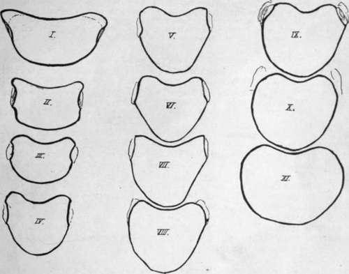
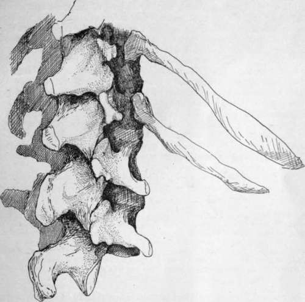

Dorsal Vertebra. Continued
Description
This section is from the book "The Anatomy Of The Human Skeleton", by J. Ernest Frazer. Also available from Amazon: The anatomy of the human skeleton.
Dorsal Vertebra. Continued
Indications of the diverging nature of the fibres of the stellate ligaments of the rib-heads can be seen in the markings that lie round the facets, and the attachment of the anterior common ligament to the upper and lower parts of the bodies can usually be recognised by the markings on the bones.
The dorsal bodies vary in their shape and in the relations between their measurements. This can be illustrated by the outlines of the upper surfaces of the bodies taken from a normal column (Fig. 24). Comparing the sagittal measurement with the transverse between the margins of the upper facets, the first body gives 9 : 18, the second gives 8 : 13, in the third it is 8 : 125, while in the fourth it suddenly changes to 10 : 13. After this the measurements give :-
5, ii | 13 + | 9- 13 : I4'5 |
6, ii | 13 + | io, 13 :145 |
7. 12 | 13 + | ii. 145 |
8, 12 5 | I3S | 12, 15 5 |
In the last two bodies the facets do not reach the margin of the body.
Fig. 24.-Tracings to scale of the upper surfaces of the dorsal bodies. Notice that the third is the smallest body.
Considering these figures it may be said that the fourth is the first body in which the typical dorsal shape is undoubtedly apparent. Moreover, the body of this vertebra is, owing to this fact, more wedge-shaped than that of the third segment, so that it gives the impression cf being smaller when seen from the front : it is evident, however, that it is not the smallest body, which is really the body of the third. From this down the bodies increase in size, and in the last two the increase is considerable, especially in the transverse diameter, thus showing a tendency to approach the lumbar type. In the same way the bodies, ascending from the fourth, show an increasing approach to the cervical type, and the upper surface of the first body is strongly suggestive of the appearance of a cervical vertebra : the first vertebra also presents the two anterolateral prominences on the lower border of its body that are seen in the cervical region.
The dorsal region is naturally the most fixed portion of the true vertebral column, and its bodies afford evidence of the nature of the dorsal curve in their slightly lesser vertical depth in front : this agrees with the primary nature of the curve, and the comparative immobility of the region is related to the shallowness of the intervertebral discs.
Observe that the upper facets on the tenth are largely on the free pedicles, and those of the ninth to a lesser extent ; the facets on eleventh and twelfth are also largely on the pedicles, but do not reach the upper margins at all. This simply indicates the reduction in size of the rib, with consequent contraction, so to speak, of its area on the neural arch. It has been pointed out already that the rib is purely neural in its articulation, and the line of the neuro-central synchondrosis, though not apparent in the adult bone, lies just in front of the facet on the body, so that the facet is not on the centrum, but on the extreme front end of the neural portion. But while the fully-developed rib extends its articulation to the limit of the arch that carries it, the reduced bone withdraws from this extremity, and thus comes on to the pedicle.
The thick pedicles are attached to the backs of the bodies high up, so that the upper intervertebral notches are almost non-existent : in the first segment, however, the prominence of the neuro-central region in front, as in the cervical series, makes the notch well marked. In the case of the second vertebra the pedicles are placed so far up that the plane of the upper surface of the body passes through them obliquely : it must also be observed that the pedicles of the upper segments are directed slightly upwards as well as backwards.
The transverse processes are strong for the support of the ribs : in the last two vertebrae, where the ribs do not articulate with the processes, they are much modified. Their facets depend for their direction and appearance on the position of their ribs in the series : thus the true or sternal ribs are the upper seven, the remainder being " false " ribs, and the upper facets are well-marked, large, concave surfaces, situated on the front aspects of the transverse processes and in a vertical plane, whereas the facets for the lower ribs are smaller and flatter and tending to he on the upper aspect of the process and to look upwards.
The seventh facet is usually a transition form in these characters, but occasionally, when the eighth rib reaches the sternum, the eighth facet becomes transitional, and the seventh has the characters of those higher up. The tenth facet is small and badly marked, or may apparently even be absent.
The differences in the facets may have to do more with the attachment of the diaphragm to the false ribs than with any inherent result of their asternal position, but, however this may be, the variations are sufficient in themselves to indicate that the direction and method of movement of the ribs differ in the upper and lower series ; but of the nature of the movements divergent opinions are held by observers.
On the first transverse process the facet is at its extremity, and may look almost directly outwards : in some short processes it may even look outwards and backwards, but this may be the result of disease. The process in the first D.V. is directed most transversely, those below this showing increasing obliquity backwards.
In the eleventh vertebra the process may be a mere shapeless mass, or it may-show an arrangement of tubercles on the same plan as in the last dorsal vertebra (Fig- 25).
In the twelfth vertebra there are three tubercles to be seen, the upper, lower, and external, of which the first two at least are for muscular attachments : these will be considered when dealing with the region of the transverse process in the lumbar series, and it is only necessary to recognise them here (see p. 35).
Certain roughened areas for fibrous attachments can be made out on the transverse process of a typical dorsal vertebra (Fig. 26). On the front, a somewhat hollow and triangular area marks the attachment of the middle costo-transverse ligament ; below this a convex roughness is for the superior costo-transverse ligament of the rib below. On the top of the process is the impression of the inter-transverse muscular and tendinous bands, and the corresponding mark on the lower aspect is nearer the outer end. At the outer end is a thick lip which is behind the outer border of the facet and gives attachment to the external or posterior costo-transverse ligament : it runs below into a tuberculated impression for the origin of the Levator costae muscle, and the tubercle is better marked in the lower members of the series in conformity with the larger size of the muscle in them (see Fig. 42).
Fig. 25.-The two last dorsal and first two lumbar vertebra;, to show the tuberculated modification of these dorsal transverse processes, best marked in the twelfth.
On the posterior surfaces are slight markings for tendinous fibres of Multifidus and Semispinalis, with Rotatores spinae above these : the markings are more noticeable in the upper half of the region, owing to the additional origins of Complexus, Trans-versus cervicis, and Trachelo-mastoid, but the different attachments cannot be distinguished with any certainty on the bones. The Longissimus Dorsi is inserted into the processes.
These post-vertebral muscles also make markings on the sides of the spines, but separate indications are not to be found : possibly the more tuberous state of the spinal surface in the upper three or four dorsal vertebrae is associated with the insertion here of Semispinalis dorsi.
Notice how the laminae and spines overlap the succeeding bones and cover in the canal: such an arrangement makes it probable that the ligamenta subflava have their upper attachments higher up on the neural surface of the broad laminae than is the case in the cervical region, and inspection of this surface shows that it is so, the upper line made by the ligament crossing at the mid-level of the lower articular surfaces and indicating that the ligament becomes continuous externally with the capsule of the joint. The presence of strong ligamenta subflava in this region shows that these are not primarily concerned in covering the canal: they are to resist flexion forwards of the column, and we therefore find that they increase in strength from above downwards, reaching their maximum in the lumbar region. The line on the neural surface of the laminae enables us to divide this surface into an upper, separated from the dura mater by vascular fatty tissue, and a lower for the attachment of the interlaminar ligaments and fibrous tissue continuous with that of the interspinous ligaments.
The obliquity of the spinous processes varies in the different parts of the series, being greatest in the middle, where the spine of the seventh dorsal vertebra is usually the longest and most obliquely directed. With the exception of the upper three or four, the spines of the series are somewhat tapering and thin, but enlarging at their extremities to form tubercles : these are covered by supra-spinous ligaments and give origin to Trapezius, Rhomboids, and Latissimus dorsi muscles, according to their position.
Below the seventh, the obliquity of the spines decreases, being practically not apparent in the last two vertebrae of the region. Individual spines frequently deviate to one side or the other, without any change in the central position of the bodies.
It is clear that, as a result of their directions, the levels of the tips of the spines as felt on the surface of the body do not correspond with those of the bodies to which they belong, and it is important when considering levels or surface markings of internal structures to bear clearly in mind this distinction between bodies and spines. Each spine differs from the others in its relation to the levels of lower bodies, but a rough rule may be remembered for practical purposes, that in the middle vertebras, fourth to ninth, the tip of a spine is about opposite the disc between the two bodies next below its own body; the other levels can be obtained without much trouble on an articulated column.
The rounded shape of the spinal foramen is first reached in the fourth segment : it persists throughout the series until the lumbar enlargement of the cord, which commences just above the level of the eleventh dorsal vertebra, widens out the canal laterally in that bone and in the twelfth, so that the foramen in this last is the widest and largest in the whole series.
Continue to:
- prev: Dorsal Vertebra
- Table of Contents
- next: Lumbar Vertebra